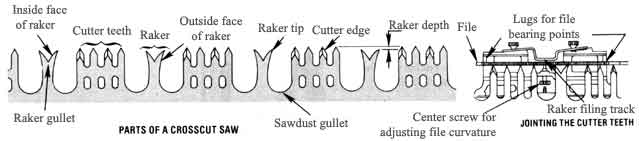
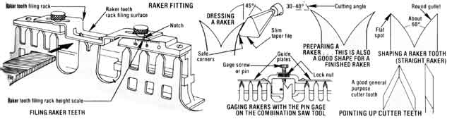
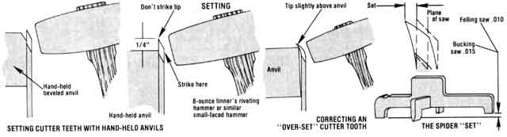

This is the second of two excerpts. The first installment, which appeared in MOTHER NO. 59, covered the use of the crosscut saw.
Reprinted from Crosscut Saw Manual by Warren Miller (available for $1.50 from the Superintendent of Documents, U.S. Government Printing Office, Washington, D.C. 20402).
Opinions vary among saw filers as to the order of steps followed in filing a crosscut. Guidelines offered by saw companies differ significantly. After examining the reasons for the different orders, I've concluded the following sequence is preferable.
Cleaning: removing rust or pitch.
Hammering: straightening a saw if it has bumps, kinks, or twists in it.
Jointing: the means by which the tips or all the cutter teeth are made to conform to the circle of the saw.
Raker fitting: includes shaping the raker gullet and swaging and sharpening the raker.
Pointing up cutter teeth: filing the teeth sharp.
Setting: bending the tips of the cutter teeth away from the plane of the saw, causing the kerf to be wider than the blade.
These are the tools necessary for each operation.
Hammering: two steel straightedges about 10 to 14 inches long, a 3- to 4-pound cross-pein saw hammer (some manufacturers call them cross-face hammers), a fairly flat anvil.
Jointing: jointer (short or long), 7- or 8-inch special crosscut file (mill bastard blunt file), saw vise.
Raker fitting: 7- or 8-inch slim taper (triangular) file, pin gage, raker gage, hammer for swaging (8- to 16-ounce tinner's riveting hammer), 6-inch slim taper file with "safe" corners (corners ground smooth), 6-inch mill bastard file, saw vise.
Pointing up cutter teeth: 7- or 8-inch special crosscut file (mill bastard blunt file) for lance tooth saws, 6- or 8-inch Great American crosscut file for champion tooth saws, saw vise.
Setting: 8-ounce set hammer (or tinner's riveting hammer), setting stake or set tool or anvil, spider, saw vise.
Often a filer must clean a rusty or pitchy saw. One good method is to lay the tool on a flat surface and clean with an axe stone or a pumice grill stone. Liberally douse the blade with kerosene or diesel oil to cut pitch and keep the stone from plugging up with debris. Small kinks show up as bright areas for high spots and dark places for indentations. Use only enough pressure on the cutter teeth to clean them... if metal is taken off the tips, both set and tooth length will be affected.
Few saws are completely straight. Although slight kinks or bumps won't cause much trouble, a straight saw requires minimum set and is less likely to buckle during the push stroke when one person is sawing. And it will cut straighter.
The saw to be straightened is hung vertically from one of the handle holes.
Hold the straightedges lightly-one on each side of the saw-so they are directly opposite each other. By moving the devices back and forth as well as along the saw, any kinks or bumps can be found. If you move the straightedges with a slight twisting motion, quite small kinks can be found by the difference in resistance. A straightedge contacting the convex side of a kink will twist easier than one on the concave surface.
When a kink is located, determine its shape and axis by moving the straightedges over its surface. Mark its shape with chalk or grease pencil (a wetted finger works well too), put the concave side down flat on the anvil, and-with the appropriate face of your cross-pein hammer-strike the saw several times over the kink. (The appropriate face is the one that is fairly parallel to the kink axis.) Check with straightedges and determine further action. Take care to strike the saw with the face of the hammer and not the edge. If done properly, the hammer should leave no visible mark. A slightly round-faced, 3-pound hammer can be used, but results aren't as good as with the cross-pein type.
If it should be impossible to acquire a straightedge specifically for saw work, acceptable substitutes exist. The characteristics of a desirable straightedge are that it be light, stiff, and reasonably straight. A thickness from 0.050 to 0.100 inch is acceptable with the thinner dimension being desirable. Possible substitutes might be draftsman's or machinist's straightedges, or the rule from a combination square.
The number and variety of jointers are considerable, but the principle is the same for all. They hold a file in such a way that it can be run over the saw teeth to insure that they all lie on the circle of the blade. There are short and long jointers. The short jointer, generally part of a combination saw tool, is by far the more common.
To use the short jointer, insert the file so it rests flat on the supports (lugs) and adjust the screw so the rasp bends to conform to the circle of the saw. Make sure the surface of the file is square with the guide rails on the body of the jointer... the tool may be warped or improperly seated on the supports. Insert the file so it runs in the normal filing direction (if used backwards, its life will be severely shortened). Because a new rasp often will cut faster than desired, a worn-out 7- or 8-inch special crosscut file with the tang broken off works well.
Place the jointer on one end of the saw. Holding the tool so the file rests on the cutter teeth, run the jointer the length of the blade, using uniform downward pressure. This is crucial if the circle of the saw is to be maintained. It is also important to hold the guide rails on the body of the jointer in contact with the side of the saw at all times to assure that the file is square to the blade.
After the jointer has been run the length of the saw, look at the teeth. If each tip has a shiny spot where the file has just touched it, jointing is complete. If some teeth are so short they weren't touched, repeat the process until all show the mark of the file. If a tooth has been chipped or broken so it is much shorter than the rest, don't worry about it. No sense jointing the life out of a saw to make it perfect.
For a saw to operate efficiently the raker teeth must remove all the fiber severed by the cutter teeth, but no more.
Because the cutting teeth exert pressure on the wood as they cut, a certain thickness of wood is compressed and springs back after the teeth pass over. As a result, fibers are not severed quite as deeply as the teeth penetrate. Consequently, the rakers following the cutters must be shorter by the amount the wood springs back, so no unsevered wood is removed.
Optimum depth is obtained by experiment, but figures vary from 0.008 inch for hard or dry wood to 0.030 inch for soft, springy wood... 0.012 inch is a good average figure to begin with.
The depth of the rakers below the cutter teeth is determined by using a tool called a raker gage or raker depth gage... generally part of a combination saw filing tool of which numerous varieties were manufactured. The essential feature of all of them is a hardened steel filing plate with a slot cut in it a little wider than the thickness of a saw and a little longer than the distance between the two tips on a raker. This is held on a frame in such a way that when the gage is placed over the raker, the top of the filing plate is the same level as the desired raker depth. The raker tips are cut to the level of the plate with a file. The height of the filing plate is adjustable.
One way of checking the setting of a raker gage is to file a raker, using the tool... then by placing a straightedge between the two cutter teeth on each side of the filed raker, you can measure the relative height with a feeler gage placed between the raker and straightedge.
There are two basic ways a raker can be shaped before it is filed to its proper depth: straight or swaged. The straight raker is by far the easier to file, but it results in a relatively "slow" running saw. The swaged raker is considerably more difficult to shape but results in a superior tool. The reason for the difference is apparent when one remembers that the raker acts like a chisel to remove the shaving. Much less energy is required to remove wood from a board if a chisel is held at a low angle to a board than if it is held vertically. Swaging results in a raker tip that is similar to a chisel held at a low angle to the wood.
With a 7- or 8-inch slim taper file, dress (smooth) the outside face of the rakers from the raker tip to the bottom of the sawdust gullet. Make sure the file is held square with the saw. This will provide clean, sound metal for the cutting edge of the raker, cause less friction between the outside face and the shaving, and aid shaving removal.
Next, file the raker to the proper depth. Place the properly adjusted raker gage on the saw so the raker fits in the slot in the filing plate. Hold the gage so it rests firmly against the tops of the cutter teeth as well as the side of the saw. Run a file across the raker tips until they are even with the top of the filing plate. Once the raker tip has been filed, the raker must be sharpened. With a 7- or 8-inch slim taper file, shape the raker gullet to the approximate shape shown in the accompanying illustration, rounding the gullet out to the tip until the flat spot on top almost disappears. If the tip is overfiled, it changes the raker depth. If not filed enough, the flat spot acts like a "sled runner" and does not permit the edge to work properly.
Swaging is forming the leading edge of the raker into a curve so it more efficiently picks up the shaving. It is done by striking a prepared raker tip on the inside face with a hammer to bend the tip outward in a smooth curve. A swaging hammer should have a face small enough to permit you to strike the raker tip with the center of the face. The best tool for swaging appears to be a tinner's riveting hammer.
To prepare the raker, file it approximately to the shape shown in the drawing, using the slim taper file. The exact shape depends on whether the raker is straight or has been swaged before. The objective is to shape the tip so it can be bent without breaking, but retain enough thickness to prevent bending during use. For starters, the cutting angle should be between 30 and 40 degrees.
The raker is now ready to be "swaged to the pin". This means bending the raker by striking the inside face of the raker tip with a hammer until the tip just clears a preset screw (called a pin) on a combination saw tool.
The pin is adjusted so the swaged raker is 0.002 to 0.003 inch higher than the finished raker depth. This is done by first filing a raker to depth, using the raker gage. Next, place the pin gage over the raker and adjust the pin (screw) depth so a 0.002- or 0.003-inch feeler gage will just pass between the raker tip and the pin. Check clearance again after tightening locknut.
To swage a raker, strike the raker tip a square blow, and check the height with the pin gage. If it is still too high, continue alternately swaging and checking until the raker tooth just clears the pin. Keep an eye on the shape of the bend... the outside face of the raker should bend in a smooth arc. A kinked raker tip will be difficult to swage next time the saw is filed, and it will quite possibly break. If the tip begins to kink, the hammer probably is being used too high on the tip. If it won't bend, the tip may be too thick or the hammer is being used too low on the tip. Often in the case of a new saw or a used saw with straight rakers, it will be necessary to partially swage the tip, then thin the tip some more with the file and continue swaging.
There is no pat answer to the question:
"At what angle is the raker struck?" This will vary with the shape of the raker tip and must be learned from experience. Keep an eye on the desired swage shape... knowing where to strike the tip will come with experience.
Some saws are so hard and consequently brittle that there is a possibility of breaking raker tips when swaging. If a saw is so hard that a fairly new file keeps slipping while the filer is shaping the raker gullets, or if a raker actually breaks when being swaged, the rakers should be tempered.
To temper the raker, polish one side of each raker until it is shiny. Place the saw in a vise. Heat the top three-fourths of the tooth uniformly, using a propane torch. As it gets hotter, the color will go from light straw, to brown, to deep purple, to dark blue, to light blue, to a light yellow color. There are differing opinions on how far to temper the rakers (what color to heat to). A compromise seems to be between light blue and the second yellow. A suggestion would be to first temper to light blue, then-if trouble is still experienced-temper again to the second light yellow. Don't heat into the body of the saw: It may cause the saw to warp. Be very careful about playing the torch flame on the raker tips... they heat very fast, making it extremely easy to overheat them. This causes a soft raker that will bend in hard wood and will not hold an edge.
Once the rakers are "swaged to the pin," the tips are dressed on the outside face. To dress the swaged tip a 6-inch slim taper file with "safe" corners is run lightly across the under edge of the swage to square it up and establish the rake angle. It is most important not to nick the raker with the edge of a file. A nick can cause the tip to break off during swaging or in use. This is the reason for the ground "safe" corners on the dressing file. After dressing the outside face and rake angle, joint exactly as with the straightstyle raker. As with straight rakers, a trial depth of 0.012 inch for average conditions is good.
The last step is to dress the sides of the rakers. The swaging process often widens the raker at the tip. This can be corrected by holding a 6-inch mill bastard file flat against the raker and saw and making one or two light vertical strokes.
To check for bent rakers make up a spider (set gage) for zero clearance on an unbent raker. A bent raker can easily be found by using the spider in the same manner as for checking cutter tooth set (see "Setting").
To straighten a bent raker, the concave side of the raker is placed on an anvil and hammered until tooth is straight. Badly bent cutter teeth could be straightened the same way.
A broken raker tip allows the other tip on the raker to bite too deeply on the cutting stroke, causing the saw to catch just as it does with a long raker. File the unbroken tip shorter, say 0.005 inch for starters. If it still catches, file it even shorter.
To point up the cutter teeth, tilt the vise away from you at about a 45-degree angle. With the vise tilted, the flat spot on each tooth caused by jointing should appear bright. The main light source needs to be in front so you can see a good reflection off the flat spot. A wide set of windows (preferably facing north to avoid direct sunlight) works well. If possible, avoid point sources of light such as incandescent bulbs and direct sunlight.
For filing the teeth, a 7- or 8-inch special crosscut file is used. The stroke should be more nearly up and down the tooth than across. The main point to keep in mind when filing a cutter tooth is to file just enough to almost make the flat spot from the jointing operation disappear. Overfiling upsets the relation between the cutters and the rakers and also results in a weak point. A slight rolling or rocking motion of the file generates a slightly convex filed surface and results in a more durable tooth. Because of the set, a tooth whose filed surface is flat will develop a concave cutting edge and a thin, weak point.
As the tooth is being filed, it is a good idea to periodically remove the burr that forms on the back side because it can obscure the true tooth shape. Remove the burr with whetstone or a light stroke of the file across the tooth back... just enough to remove the burr . The back side of the tooth must not be filed because it may cause the saw to bind. The burr can also be removed with a piece of hardwood.
After all the teeth are filed, run over them with a fine stone held flat against the saw to remove any residual burrs, especially at the tip of the tooth. A burr under the spider would cause an error in the tooth set.
To set a saw is to bend the tip of each cutter tooth away from the plane of the saw a slight amount. Just as alternate teeth are sharpened opposite each other, they are set opposite to each other. Setting helps prevent binding by resulting in a kerf that is slightly wider than the saw. The amount of set required depends on the type of saw used and the type of wood being cut. A saw should be set only as much as required to keep it from binding. More set than necessary results in more work to make a wider kerf, and a saw that flops... with the possibility of a curving cut. The set required can vary from almost nothing for a crescent-taper-ground saw in dry hardwood to 0.030 inch for the same saw in soft, punky wood. A set of 0.010 inch is a good figure to start with. Flat-ground saws require more set.
There are several ways of hammer setting a saw, only one of which is recommended because of its speed and accuracy. The necessary tools are an 8-ounce set hammer, a set anvil, and a spider (set gage).
There doesn't appear to be a current manufacturer for a hammer specifically designed for setting. A setting hammer should have a fairly small face. A large face such as most ball-pein hammers have is difficult to use for setting without hitting adjacent teeth. The best substitute for a setting hammer appears to be a tinner's riveting hammer that weighs about 8 ounces.
There is no known current manufacturer for hand-held anvils. Any piece of steel that can be held comfortably in the hand and has a flat face and weighs about 2 pounds will work. A piece of 1-1/2-inch-diameter shaft about 5 inches long works admirably. It is not necessary to have a bevel... simply setting the tooth over the edge of the face will work fine.
The spider (set gage) is used to measure the tooth set. To check the set for which the spider is adjusted, place it on a flat surface so that the feet on the three short legs contact the surface. With light pressure on the three short legs, measure the clearance under the fourth foot (or longer leg) with a feeler gage. A piece of plate glass or a mirror will work for the flat surface, though it is wise to check the spider several places on the surface so errors caused by irregularities can be averaged out.
As indicated earlier, a set of about 0.010 inch would probably be satisfactory for average work for a felling saw. More set is required for a heavy bucking saw, say 0.015 inch.
To adjust the spider for less set, place it on a flat carborundum stone and, while putting pressure on the short crosspiece, grind the feet down until it measures right. For more set, shorten either end of the long crosspiece. It is important that the foot at the end of the long leg is flat and parallel to the plane defined by the other three feet. This assures a constant reading no matter where the tip of the cutter tooth contacts the foot. This can be checked by lightly grinding that foot while the two feet on the short crosspiece are in contact with the stone and observing the resulting pattern on the foot.
To set the saw, place an anvil on the point side of the tooth and strike the tooth on the beveled side with a set hammer. The bevel on the anvil should be about 1/4 inch below the tip of the tooth and the direction and placement of the hammer blow such that the tip of the cutter tooth is bent over the bevel. Be sure to strike the tooth squarely. If it is struck a glancing blow with the edge of the hammer face, the point of impact will be badly marred. This sometimes work-hardens the metal enough that a file won't cut it. And it may make the tooth more susceptible to breaking.
It is also important to keep the face of the anvil parallel to the plane of the saw when setting. If it is held at an angle, the tooth will be twisted when set. Check the set with the spider. If the vertical legs rock, there is insufficient set and the above procedure should be repeated. If the horizontal legs rock, some of the set must be taken out. This is done by moving the anvil nearly to the top of the cutter tooth and striking a light blow.
Sometimes a tooth will have been bent from a point below the filed part of the tooth. This can be determined by checking with the spider up and down the tooth. If this is the case, place the anvil on the tooth just below the bend and straighten it by hammering the opposite side of the tooth just above the anvil.
EDITOR'S NOTE: MOTHER NO. 59 is available for S3.00 (plus $1.00 postage and handling per order) from THE MOTHER EARTH NEWS(restricted), P.O. Box 70, Hendersonville, North Carolina 28739
|
 |
 |
 |